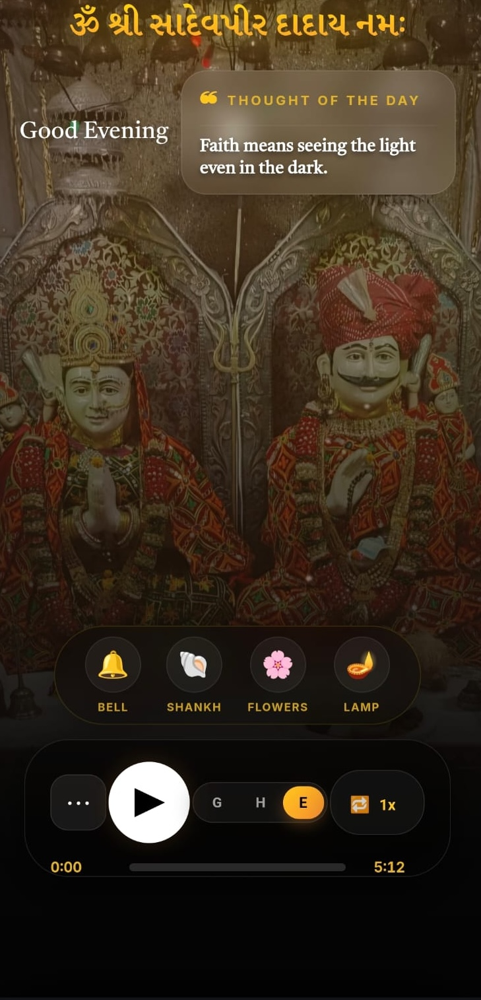

Education
B.Sc. Computer Science
GKS College of Commerce and Science, graduated in 2026.
B.Sc. Computer Science Graduate • Mumbai • Open to Work
I am Monish Mahesh Gori, a Computer Science graduate focused on web development and practical software building. I work across frontend, programming fundamentals, and product-style execution, and I am actively looking for internships and entry-level roles.
Profile
My background includes C, C++, Java, Python, SQL, React, Node.js, HTML, CSS, and JavaScript. I have already shipped live devotional web apps and I am continuing to build out my final year project and public portfolio presence.
Education
GKS College of Commerce and Science, graduated in 2026.
Training
Completed programming and computer training at Raj Computers.
Status
Already publishing projects, refining GitHub, and preparing for professional work.
Skills
Featured Projects

01
Live on VercelProblem: Devotional content is often scattered, making daily spiritual use less convenient.
Users: People who want one direct place for devotional reading and prayer content.
Role: Developer and owner.
Features: Chalisa, Aarti, Mantras, Stutis, Satya Ghatna content, bilingual support, mobile-friendly layout, and installable app-like behavior.
Stack: React • JavaScript • CSS • Vercel • PWA • Service Worker
Outcome: Learned content structuring, mobile UI improvement, deployment workflow, and how to make a web app feel closer to a real product.
02
Live on VercelProblem: Users need devotional material presented in a simple format that is easy to access every day.
Users: People looking for organized spiritual reading and prayer content.
Role: Developer and owner.
Features: Clean devotional reading flow, bilingual content support, structured navigation, mobile-first layout, and installable app-style usage.
Stack: React • JavaScript • CSS • Vercel • PWA • Service Worker
Outcome: Learned cleaner UI presentation, better product thinking, live deployment workflow, and how to turn a content idea into a usable public app.
03
In ProgressMy final year project focused on hospital appointment management. It is designed to make appointment booking, scheduling, and patient-side access more organized and efficient. Full live and repository links will be added after final publication.
Final Year Project • Hospital Appointment Management
Resume Highlights
Contact
If you are hiring for internships, junior developer roles, or fresher positions, I am available to discuss opportunities immediately.